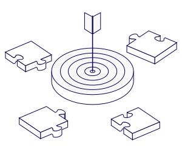
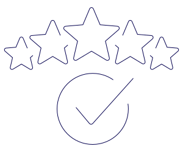
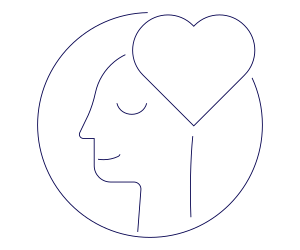
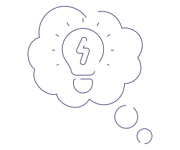
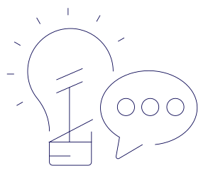

Rooted in a long-standing legacy of global digital expertise and built from the ground up to tackle real-world marketing challenges, Resulticks is committed to transforming customer engagement for all—across industries, business types, and regions.
We always challenge ourselves to do better, to go the extra mile, and to work together to deliver the greatest value for our clients. We want to reach greater heights, and there is no stopping us.


We believe in our solution, our team, and our vision. We are passionate about the transformation that Resulticks can deliver, and we’re committed to demonstrating the value to organizations worldwide.
We are always evolving and growing with the times. We consciously cultivate cutting-edge skillsets and stay ready to revolutionize every aspect of ourselves.


We are curious—about different perspectives, cultures, and approaches. We know that Resulticks thrives because of our diversity and willingness to challenge conventions.